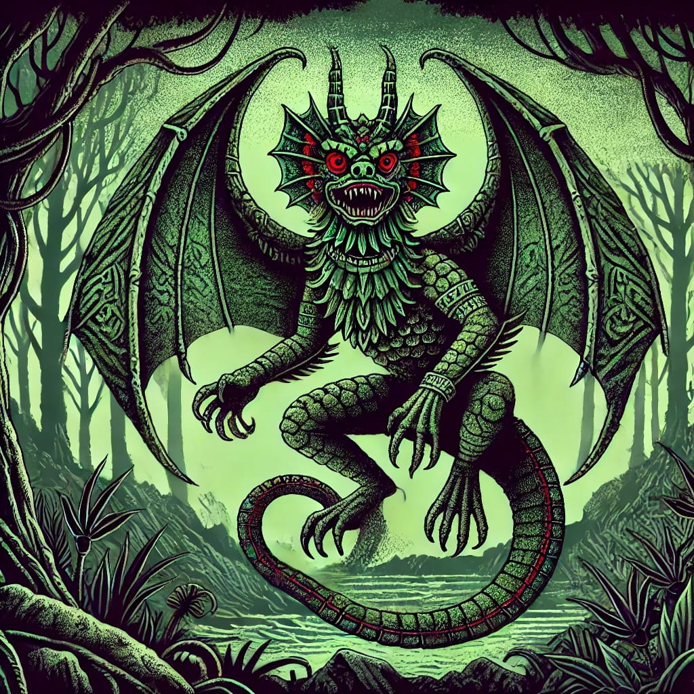

El Peuchen es una criatura temida en la mitología del sur de Chile. Este ser cambia de forma, tomando la apariencia de una serpiente alada. Se dice que el Peuchen ataca a las personas y animales por las noches, alimentándose de su sangre como un vampiro. Su presencia se detecta por los sonidos extraños que emite, similares a un silbido o zumbido. Para protegerse, los habitantes recurren a amuletos o invocan la ayuda de un machi, el chamán mapuche, quien tiene el conocimiento para enfrentarse a este peligroso ser. La leyenda del Peuchen refleja el temor hacia lo desconocido y la necesidad de protección espiritual.